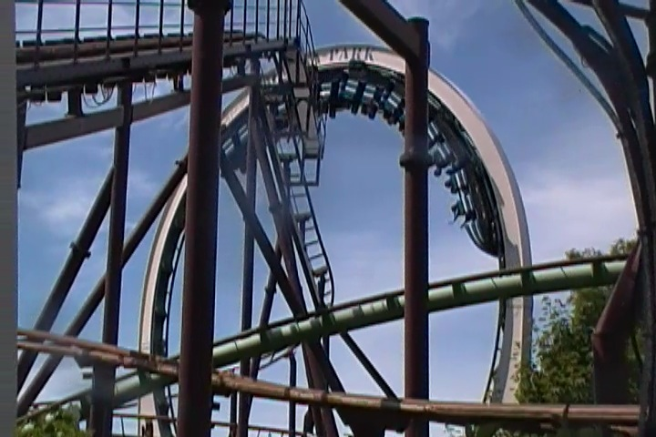
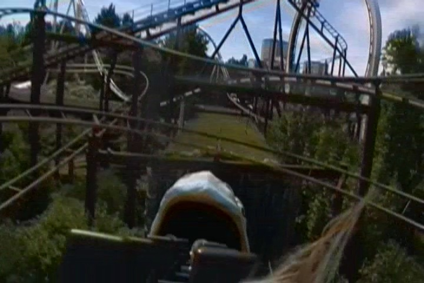
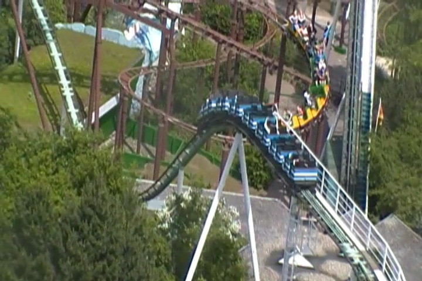
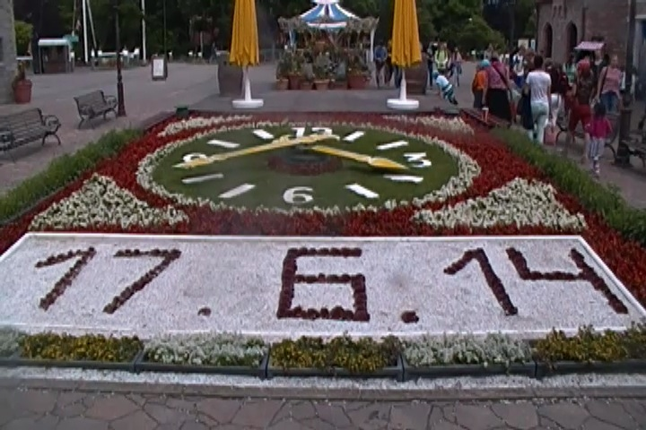

| |
TPR's Scandinavia Trip
Copenhagen Sommerland Sjaelland Bakken Tivoli Gardens
Bon Bon Land
Hansa Park
Legoland Billund
Djurs Sommerland
Tivoli Friheden Farup Sommerland Tusenfryd Liseberg Skara Sommerland Grona Lund Power Park Sarkanemmi Linnemaki
All right. We're in Germany and now on their way to another great German park.
We had to take a detour through local roads thanks to roadwork. Hey, I didn't mind. The town looked absolutely beautiful.
Yay!!! We made it!!!
 Technically not in Scandinavia, but hey. It's super close to Denmark. So why the hell not drop down and take a visit. Plus, its just as good as all the other great German parks.
Technically not in Scandinavia, but hey. It's super close to Denmark. So why the hell not drop down and take a visit. Plus, its just as good as all the other great German parks.
The park treated us great, giving us all sorts of stuff. I got from them a map, a pin, and a hat. Yep, I got another coaster hat. After my Prowler Hat 4 years ago, I'm ready for a new hat (despite not being a hat person).
 And of course, we got ERT on the parks star attraction (for now), Fluch von Novgorod.
And of course, we got ERT on the parks star attraction (for now), Fluch von Novgorod.
Boy, those restraints seem much more flimsy compared to the other Euro-Fighters.
Love the single riders line they have for the ride.
This is without a doubt, the best Euro-Fighter we've ridden so far. No doubt about that. It's not only got a really cool dark ride section, but it also has a launch as well.
It may not look like the best thing ever, but it's just such a fun ride.
It may not have the most inversions ever, but that Zero G Roll was really good.
Wee!!! Hangtime!!!
 Love the Wile E. Coyote-like hands in the tunnel.
Love the Wile E. Coyote-like hands in the tunnel.
And let's not forget about the park's super good exit. I mean, you can either take the stairs or the slide. Choose wisely. =)
After our ERT, we got a special presentation from the park on their new 2015 coaster, Schwurdeskarnan.
Basically, the ride is going to be a Gerstlauter Hyper Coaster with a huge indoor section. Damn, that sounds impressive.
That's only a sliver of the land this monsterous coaster is gonna take up. =)
Notice the lack of ID methods for the cigarette vending machine? Yeah, this wouldn't end well in the United States.
Hey look!! A ride that's not only closed 90% of the time, but has extremely low capacity!! Let's ride!!
Love the theme of this. It blends in so well with the park.
The capacity may be dreadful, but this is a really good frisbee.
 I constantly missed these spinning raft rides and finally got on the one at Parc Asterix, and wasn't that impressed with it. So hopefully this one is better.
I constantly missed these spinning raft rides and finally got on the one at Parc Asterix, and wasn't that impressed with it. So hopefully this one is better.
 Nope. This one might've been even tamer. Guess these things just don't spin the way they've been hyped up.
Nope. This one might've been even tamer. Guess these things just don't spin the way they've been hyped up.
A: Every park in Europe must be required by law to have a Wild West Area. B: The Wild West Area looks fantastic.
"Umm, this horse isn't going anywhere. I think it might be dead."
Crappy Looping Starship in the middle of the Native American section.
"Have a seat Kevin and let me show you how my tribe used to make bread."
Love the random wet and dry slides in these parks.
 All right. Let's move on and start getting the rest of the credits here.
All right. Let's move on and start getting the rest of the credits here.
You better brace yourself cause this is easily one of the more BRUTAL wild mouses.
This is easily one of the best Wild Mice out there.
 Moving onto the next credit, we're moving onto the parks newest coaster, Schlange vid Midgaard.
Moving onto the next credit, we're moving onto the parks newest coaster, Schlange vid Midgaard.
 It's a fun little ride and you get 2 laps on it. Not a bad ride.
It's a fun little ride and you get 2 laps on it. Not a bad ride.
All right. Time to traumatize all the local children as we take over the Pillow. =)
"Whoa!! What is this floating feeling!!?"
No Niel. We're not gonna let you get back up. Just lay still and enjoy the ride.
 Up next, the Vekoma Roller Skater. Cody's favorite ride.
Up next, the Vekoma Roller Skater. Cody's favorite ride.
 Yes. The ride does in fact thread the loop of Nessie (we'll get there soon enough).
Yes. The ride does in fact thread the loop of Nessie (we'll get there soon enough).
Hey, it was a custom layout and a really fun ride.
 And finally, we get to ride Nessie.
And finally, we get to ride Nessie.
 With all the Schwarzkophs going extinct, its great to see Hansa Park preserving theirs.
With all the Schwarzkophs going extinct, its great to see Hansa Park preserving theirs.

Still packs quite a good punch in the loop.

TAKE THE MONSTER!!!!

Hey, it may not be the golden shot with Nessie in the loop while the Roller Skater is threading it, but its a good enough dueling shot. =)
And in case you could't tell, we are up in the Sky Tower, looking at the surrounding area. Love the look of the town.
How good is the food at Hansa Park?
 Not the best food on the trip, but I'm always fine with a big stick of meat.
Not the best food on the trip, but I'm always fine with a big stick of meat.
Love the atmosphere they have on their boat ride.
It's a bird you perverts. =)
Not only are Bayern Curves rare rides themselves, but this is the only Double Bayern Curve in the world (that I know of). So of course, we had to take a ride.
For some reason, the pirate ship here was just really good.
 Of course, we had to take another ride on Fluch von Novgorod because of how good it is.
Of course, we had to take another ride on Fluch von Novgorod because of how good it is.
 WEE!!! EJECTOR AIR!!!
WEE!!! EJECTOR AIR!!!
It's a shame that more rides don't get all the effort that Hansa Park puts into theirs. =)
This is the fate of anyone who f*cks around at Hansa Park.
I'm not sure what was up with the doughnuts here, but this was one of the blandest doughnuts ever. Hey, at least I really liked the milkshake.
"Hey you!! Yes you!! I know you're a huge nerd!! So go on and take all our park maps!!"
When in Germany...

"Excuse me, but I'm from the future. Where am I and what time is it on todays date?"
Well, so long Hansa Park. You're a fantastic park and I'll be sure to stop by next time I'm in Germany.
All right. We're back in Denmark and ready to check into our next hotel.
Yeah. This hotel was undergoing a lot of construction, and as such, it was my least favorite hotel of the trip. Now, I don't mind noises at night, and the rooms were actually really nice. However, one problem that I couldn't overlook was...
You HAD to take the elevator. Yes, HAD to. The stairs were off limits unless a fire broke out. Considering how many of us there were and how few can fit in the elevator, this caused so much unnecesarry waiting that could've been avoided if people could just take the stairs (Quick packing tip from Incrediblecoasters. Don't like carrying all your luggage? Pack lighter). Luckily, we were one of the first people, so we got a huge head start.
Nice view we got of the local intersection in Aarhus.
We just headed over to the local Burger King for dinner. And after that, I hung out with some people in the lobby, but for the most part, just relaxed spent the night catching up on videos.
Legoland Billund
Home
|